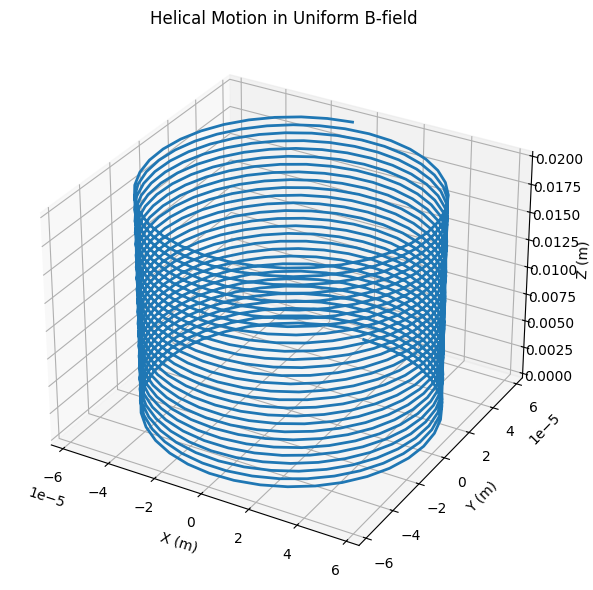
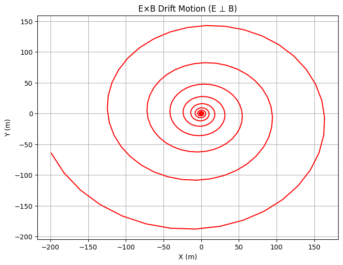
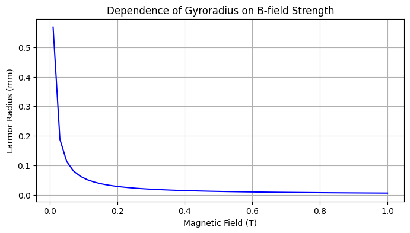

Problem 1
Introduction to the Lorentz Force
The Lorentz force describes the combined influence of electric and magnetic fields on a charged particle:
where:
-
F = Force acting on the particle (N)
-
q = Charge of the particle (C)
-
E = Electric field (V/m)
-
v = Velocity of the particle (m/s)
-
B = Magnetic field (T)
This force governs the motion of charged particles in plasma physics, particle accelerators, mass spectrometers, and astrophysical systems (e.g., solar wind dynamics).
Key Applications of the Lorentz Force
(a) Particle Accelerators (Cyclotrons, Synchrotrons)
Magnetic Field Role: Confines particles into circular orbits via centripetal Lorentz force.
Electric Field Role: Accelerates particles at gaps between "Dees" (in cyclotrons).
(b) Mass Spectrometers
Principle: Particles with different \(\frac{q}{m}\) ratios follow distinct trajectories in a uniform B-field, allowing mass separation.
(c) Plasma Confinement (Tokamaks)
Magnetic Fields: Prevent plasma from contacting walls by inducing helical motion (see §3.2).
(d) Astrophysical Phenomena
Charged Particle Trajectories: Cosmic rays spiral along interstellar magnetic fields.
Motion of Charged Particles in Different Field Configurations
Uniform Magnetic Field (E=0)
The force reduces to:
Trajectory: Circular or helical motion.
Key Parameters:
Larmor Radius (Gyroradius):
where v⊥ = velocity perpendicular to B.
Cyclotron Frequency:
Combined Uniform E and B Fields
\(\text{If } E \parallel B:\)
Particle accelerates along \(B\) while spiraling (helical trajectory).
\(\text{If } E \perp B:\)
Drift Velocity:
(Particle drifts perpendicular to both fields.)
\(Crossed Fields (E⊥B)\)
Special Case: Hall Effect (charge carriers drift laterally in conductors).
Trajectory: Cycloidal (combination of circular and linear motion).
Numerical Simulation Approach Equations of Motion
From Newton’s second law:
Numerical Methods:
Euler Method (simple but less accurate):
Runge-Kutta (RK4) (higher precision):
Uses weighted averages of intermediate steps.
Key Visualizations
Helical Motion (uniform B):
3D plot of z-axis progression with circular xy-motion.
Drift Motion \((E⊥B)\)
Curved trajectory with net drift perpendicular to both fields.
Larmor Radius Variation:
\(\text{Plot } r_L \text{ vs. } B \text{ for fixed } v_\perp\)
Practical Implications
(a) Cyclotrons
Resonance Condition: RF electric field matches \(ω_c\).
Particle Energy:
(where r = orbit radius).
(b) Mass Spectrometers
Ion Separation:
(heavier ions curve less).
(c) Magnetic Mirrors (Fusion Devices)
Principle: Non-uniform B-fields reflect particles via magnetic moment conservation.
Extensions to Complex Scenarios
Non-Uniform Fields:
Gradient-B drifts, curvature drifts.
Relativistic Effects:
\(\text{For } v \approx c,m \to \gamma m_0\)
Multi-Particle Systems:
Plasma simulations via Particle-in-Cell (PIC) methods.
Graphical Representations
Helical Motion in Uniform Magnetic Field (3D Plot) python

E×B Drift in Crossed Fields (2D Plot)

Larmor Radius vs Magnetic Field Strength

Conclusion
The Lorentz force dictates charged particle motion in laboratory, industrial, and cosmic environments. Simulations reveal:
Guiding center drifts in crossed fields.
Resonant acceleration in cyclotrons.
Mass-dependent trajectories in spectrometers.
Future directions could explore stochastic fields or quantum effects (e.g., Landau quantization).